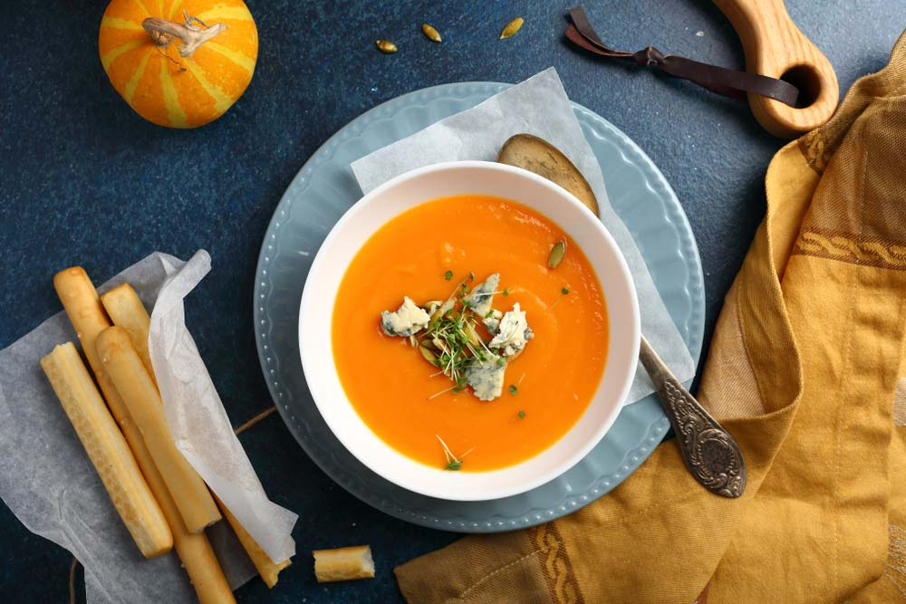

Гарбуз користується заслуженою популярністю на всіх континентах. Як його тільки не готують: і відварюють, і запікають, і смажать, і їдять сирим, готують снеки, приправляють спеціями, травами, маслом і медом. Він корисний в будь-якому вигляді для дорослих і дітей.
Звичайно ж, максимальну користь можна отримати з сирої м’якоті, але й приготований овоч містить ті ж мінерали і вітаміни. У цій статті ми розповімо про користь і шкоду вареного гарбуза, нормах вживання і протипоказання.
Варений гарбуз

Гарбуз – цінна баштанна культура з багатим хімічним складом. Її зовсім просто готувати в домашніх умовах. З відвареної м’якоті виходять відмінні каші, супи, пюре для дитячого харчування. Перевага такого способу кулінарної обробки – в збереженні корисних якостей, властивих сирому овочу.
Користь і шкода
Варений гарбуз підходить для дитячого харчування з ранніх років. Яскравий помаранчевий відтінок привертає увагу малюків.
Пюре, каші та супи часто подобаються маленьким вередунам. Вони відмінно насичують і заповнюють запаси вітамінів і мінеральних речовин.
Відварна м’якоть допомагає вагітним боротися з набряками. Цьому сприяє калій, який м’яко і безпечно виводить зайву рідину з тканин.
Маски з вареного гарбуза здатні замінити багато дорогих косметичних продуктів. Вони наповнюють шкіру вологою, живлять, вітамінізують і розгладжують дрібніь зморшки.
Крім благотворного впливу на організм, варений гарбуз може нашкодити людям, що страждають:
Довідка. Заборона на гарбуз при виразці шлунка більше відноситься до сирого овочу. Варену м’якоть вживати в невеликих кількостях дозволено.
Склад
У м’якоті вареного гарбуза збережені практично ті ж корисні речовини, що і в сирому овочі:
Скільки калорій в відвареному гарбузі? На 100 г м’якоті – всього 28 ккал.
Глікемічний індекс вареної м’якоті – 75 одиниць. Це досить високий показник, тому діабетикам рекомендується вживати гарбуз в обмеженій кількості. Для них особливо помітний вплив гарбуза на підшлункову залозу.
Довідка. Глікемічний індекс (ГІ) – це показник, який відображає швидкість збільшення рівня цукру в крові при вживанні конкретних продуктів. Швидкі вуглеводи організм засвоює швидко. Підвищений рівень глюкози подає сигнал підшлунковій залозі про необхідність вироблення порції інсуліну.
Висновки
Гарбуз – унікальнt джерело вітамінів і мікроелементів. Далеко не кожен продукт може похвалитися такою кількістю корисних речовин. Застосування цього овоча давно вийшло за кулінарні рамки, гарбуз використовують в косметичній та фармацевтичній промисловості, для виготовлення різноманітних інсталяцій. Грамотне вживання гарбуза позитивно позначиться на вашому здоров’ї.